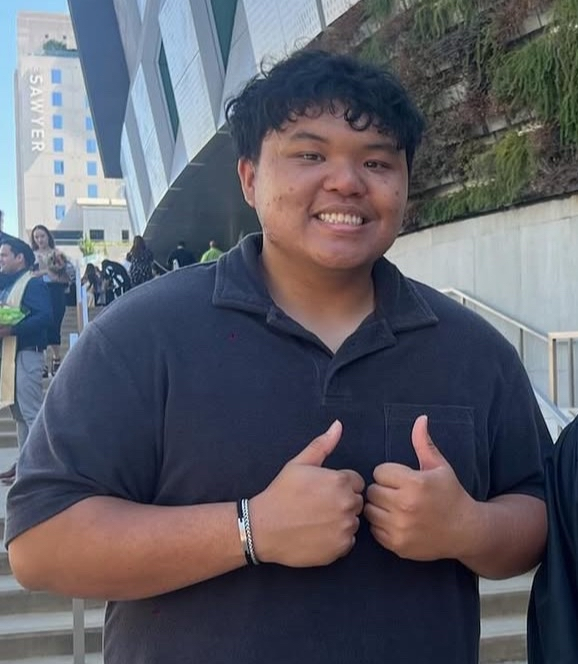

Xin chào! Welcome to the official website of the Vietnamese Student Association at California State University, Sacramento!
It is my honor and privilege to serve as the 2024-2025 President of VS this year. Our organization is built on the core values
of culture, community, and connection. Through cultural showcases, community outreach, leadership development, and social events,
we aim to celebrate Vietnamese heritage while creating a welcoming space for students of all backgrounds.
VSA is more than just a student club - it's a family. Whether you're here to embrace your family's hertiage, make lifelong friends,
or challenge yourself through leadership and service, there's a place for you in our community.
Thank you for taking the time to visit our site. We hope you'll join us at our next event or reach out to learn more about how you
can get involved. Hope to hear from you!
— Johnson Nguyen